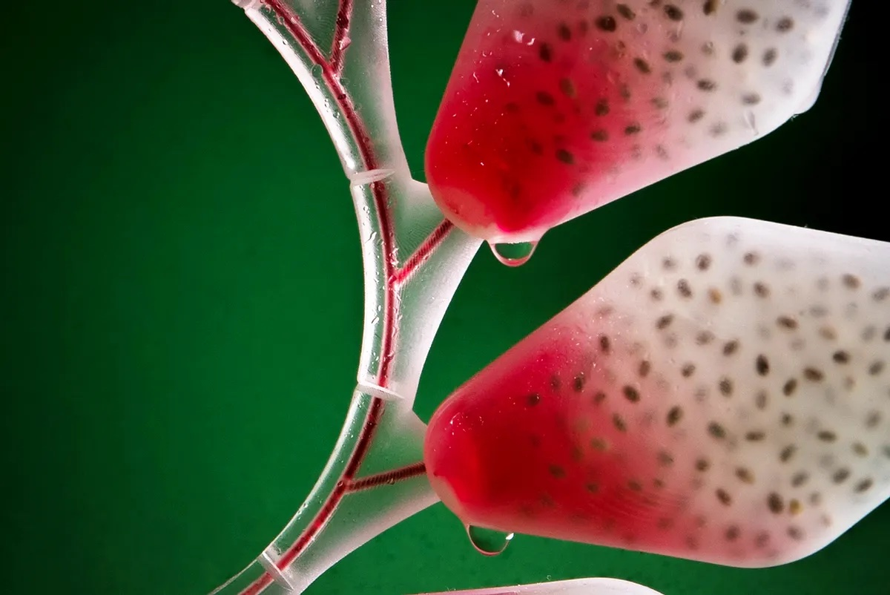
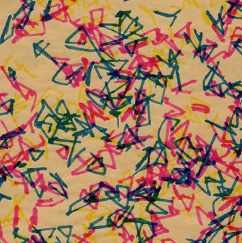
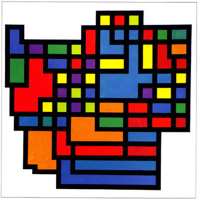
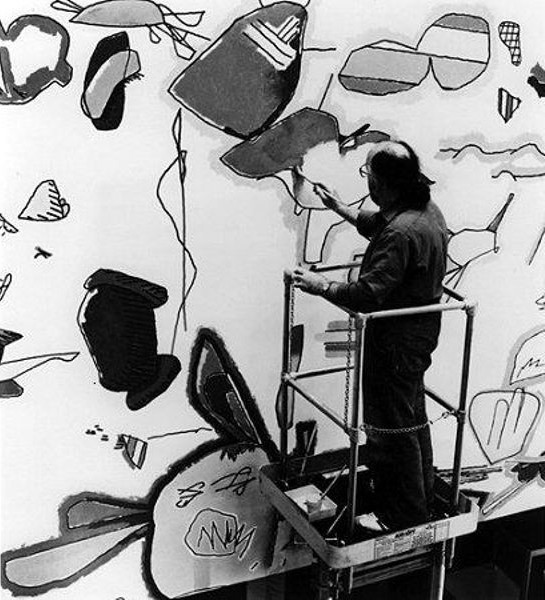
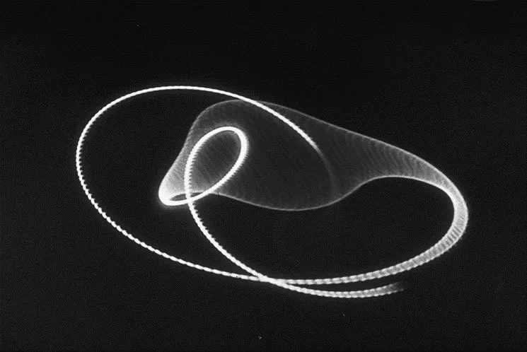

Neo_Fruits is a design project by industrial designer Meydan Levy that explores a future where humans make food artificially. It proposes 3D/4D printed artificial fruits as an alternative to natural food. These are made using cellulose and enriched with vitamins and minerals after printing. source: https://designawards.core77.com/speculative-design/84449/Neo-Fruit

Created while studying at the Experimental & Electronic Art department. The work connects randomly generated points to create unpredictable shapes. Brush pens were used to add variation and a handmade feel. source: https://stephenbell.org.uk/index.html

Rendered in gouache on paper. The model was coded in Fortran using a HITACHI 5020 in Tokyo. This work combines painting with early computer-generated systems. source: https://www.overheadcompartment.org/the-work-of-art-in-the-age-of-programmatic-abstraction/

Harold Cohen created AARON in the 1960s, one of the first AI art programs. It generates drawings using coded instructions and was developed as a creative system. source: https://whitney.org/exhibitions/harold-cohen-aaron

Early computer-generated art made when computers were large research machines. This exhibition helped establish generative and computational art practices. source: https://zine.zora.co/issue/intergenerational-dynamics/herbert-w-franke